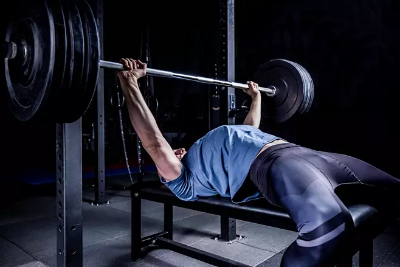
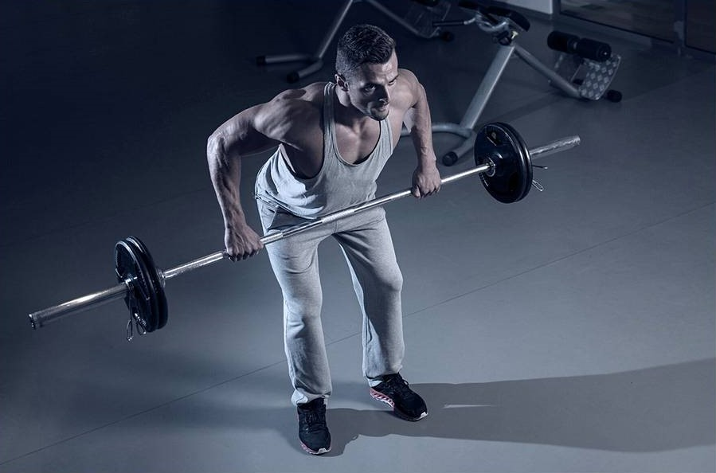
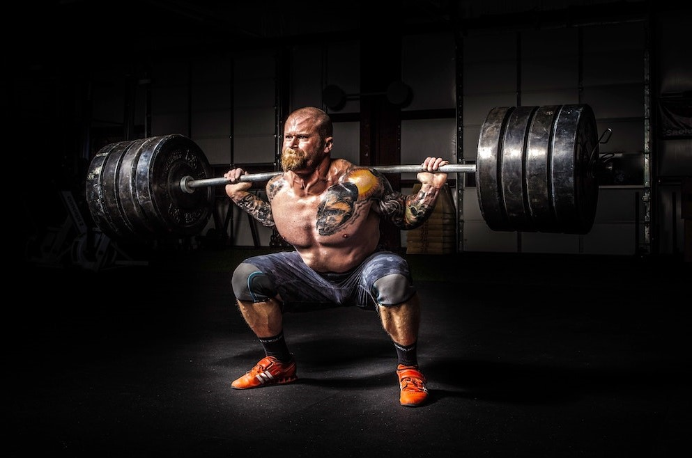

Penkkipunnerrus

- 1. Asetu makaamaan penkille selkä alaspäin.
- 2. Ota levytanko käsiisi hieman olkapäiden leveydellä.
- 3. Nosta tanko rintakehälle hallitusti ja työnnä se ylös käyttäen rintalihaksia.
- 4. Toista liike halutun toistomäärän verran.
- 5. Muista pitää hyvä ryhti ja hengittää oikein liikkeen aikana.
Kulmasoutu

- 1. Seiso jalat olkapäiden leveydellä ja ota käsipainot käsiisi.
- 2. Kumarru eteenpäin lantion pysyessä taaksepäin, säilytä neutraali selkäasento.
- 3. Vedä käsipainot ylös kohti rintakehää kyynärpäät taakse suunnattuina.
- 4. Alas laskiessasi pidä liike hallittuna ja kontrolloi käsipainoja.
- 5. Toista liike halutun toistomäärän verran.
Kyykky

- 1. Asetu seisomaan jalat olkapäiden leveydellä.
- 2. Laskeudu alaspäin kyykkyasentoon pitäen selkä suorana.
- 3. Ponnista takaisin ylös käyttäen jalkalihaksia.
- 4. Muista pitää polvet linjassa varpaiden kanssa.
- 5. Toista liike halutun toistomäärän verran.
Proteiinijauhe

- Käyttötarkoitus: Proteiinijauhe on suunniteltu täydentämään päivittäistä proteiinin
saantia, mikä on tärkeää lihaskasvun, palautumisen ja yleisen terveyden kannalta. Se tarjoaa
nopean ja kätevän tavan saada proteiinia, erityisesti harjoittelun jälkeen.
- Lähde: Proteiinijauhe voi olla peräisin erilaisista proteiinin lähteistä, kuten
heraproteiini, kaseiini, soijaproteiini tai kasvipohjaiset proteiinit kuten herne- tai
riisiproteiini.
- Hyödyt:
- Edistää lihaskasvua ja palautumista.
- Nopea ja helppo tapa saada proteiinia ilman suurta ruoanvalmistusta.
- Sopii erityisesti henkilöille, jotka tarvitsevat lisää proteiinia ruokavalioonsa.
Kreatiini

- Käyttötarkoitus: Kreatiini on aminohappo, joka auttaa soluja tuottamaan energiaa
nopeammin, erityisesti lyhytkestoisissa, korkean intensiteetin harjoituksissa. Se voi
parantaa voimaa ja nopeuttaa lihaskasvua.
- Lähde: Kreatiini löytyy luonnollisesti lihasta ja kalaöljystä. Lisäravinteena se on
yleensä kreatiinimonohydraatti-muodossa.
- Hyödyt:
- Lisää voimaa ja suorituskykyä.
- Edistää lihasten täyteyttä vedellä ja proteiinisynteesiä.
- Auttaa palautumisessa ja vähentää lihasväsymystä.
Magnesium
- Käyttötarkoitus: Magnesium on elintärkeä kivennäisaine, joka osallistuu moniin
elimistön toimintoihin, kuten lihasten toimintaan, hermoston toimintaan ja luuston
vahvuuteen.
- Lähde: Magnesiumia löytyy monista ruoka-aineista, kuten pähkinöistä, siemenistä,
vihreistä vihanneksista ja täysjyväviljoista. Sitä on saatavilla myös lisäravinteina, kuten
magnesiumsitraattina tai magnesiumoksidina.
- Hyödyt:
- Säätää lihasten toimintaa ja hermoston toimintaa.
- Edistää luuston terveyttä ja vahvuutta.
- Voi auttaa lievittämään lihaskramppeja ja edistää rentoutumista.
- Osallistuu satoihin biokemiallisiin reaktioihin elimistössä.
Ota Yhteyttä